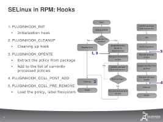

LSS: Security modules and RPM
The RPM package format and tools have long supported SELinux, so that policies are configured and files get labeled correctly at installation time. But support for other security solutions, Smack for example, is lacking in RPM. Elena Reshetova presented some ideas for rectifying that in her presentation at the 2012 Linux Security Summit (LSS). By adding hooks into RPM processing, more Linux Security Modules (LSMs) or other security components could be supported.
Reshetova began with an overview of RPM. The format is used by multiple distributions, beyond just the Red Hat distributions where it began. SUSE/openSUSE, Mageia, Tizen, and others all use RPM.
RPM package installation has the notion of a "transaction", which encompasses all of the packages to be installed or removed in a single operation. Inside these transactions are the individual packages or "transaction elements". Dependency checking is done at the transaction level, so it is only done once. Scripts to run before the transaction starts and after it ends can be configured in a package specification.

Installing each package entails a series of steps inside the transaction, starting with the optional signature verification. If that passes (or is turned off), then the "pre" script is run, the files are unpacked from the archive and installed, and the "post" script is run. As might be expected, there are a few other steps (e.g. initialization, cleanup), but, as depicted in a flowchart (seen at right), pre-unpack-post makes up the bulk of the processing.
When SELinux handling was added to RPM, it was done to set up and install the policies and label the files that get installed. That work was mostly done in the sepolicy RPM plugin using the existing RPM hooks. But some SELinux support is in the RPM core, including running the maintainer scripts (pre, post, and a few others) and doing some labeling tasks. The maintainer scripts are run using rpm_execcon() to set a particular security context before their execution.
When Reshetova and others working on Tizen started looking into adding Smack support for RPM, they realized it needed a more generalized security plugin interface. Smack requires setting up access control domains and rules on a per-package basis, but there are other security mechanisms that have needs as well. The security policy for a system or device might trust certain application repositories and only allow packages from those source to access "sensitive services". Integrity measurements may need to be bootstrapped, container configuration established, or seccomp() restrictions enabled, all of which could be handled by a generalized security plugin.
Currently, there are just a few hooks available in RPM: two before the pre-transaction script is run, one before the pre script, one after the post script, and a cleanup hook. Reshetova would like to work with the LSM developers to create an expanded set of hooks that will serve all of the LSMs (as well as the other uses). Making the hooks symmetrical, so that there are hooks both before and after transactions and package installation/removal, might be the starting point. Adding a hook to wrap script execution for setting up the proper security context is another.
Currently, the verification step only allows specifying which keys to use and what should happen if the package does not verify. Adding a hook for verification would allow for additional checking, such as that the package was signed by the right key (corresponding to the repository it came from, as opposed to any installed key, as RPM checks for currently), and to make security policy checks based on the originating repository.
The other hooks that Reshetova proposed are associated with the individual files in a package. Those would allow things like security labeling or calculating hashes on the file contents (for integrity purposes). The last hook she proposed is to handle conflicts. If a package wants to install a file that another package has already installed, the hook could install a conflict file recording the problem; later hooks could use that file to make decisions depending on the attributes of the two packages involved. If one package is from a more trusted repository, its version could be chosen, for example.
In addition, some environments may have non-native applications that use their own installer. Those have all of the same problems with handling security contexts, labeling, and so on. It would be nice to have the security plugin functionality available as standalone library that could be used by non-native application installers, Reshetova said.
Once those hooks (or a similar set that is agreed upon) are available, the SELinux-specific pieces of RPM could be moved out of the core. A unified layer of security hooks would be beneficial for a wide variety of use cases, she said. More information is available on the Tizen wiki and a GitHub repository contains the proposed changes for RPM.
Dan Walsh asked what the RPM maintainers thought about the changes; Reshetova said they are interested in seeing a unified solution. They want to make sure that there is agreement between the LSM developers, which is one of the motivations for her presentation. The intent would be to cause no disruption for the SELinux parts in RPM when moving that to the new hooks, she said in answer to another question. Walsh said that there really isn't anyone who is the "SELinux/RPM person", but he and others wouldn't oppose a patch to move SELinux out of the core; "don't break anything and I'm fine" with it, he said, though he did caution that performance might be an issue.
Since the summit, Reshetova has started a wider discussion of the hooks on the SELinux mailing list. It would seem likely that we will have a more generalized solution for RPM in the not-too-distant future.
| Index entries for this article | |
|---|---|
| Security | Distribution security/Package managers |
| Security | Linux Security Modules (LSM) |
| Conference | Linux Security Summit/2012 |
Posted Oct 4, 2012 20:38 UTC (Thu)
by dlang (guest, #313)
[Link] (3 responses)
if new capabilities are being added to support LSMs, it would be really good if the support wasn't limited to RPM based systems.
Posted Oct 4, 2012 21:03 UTC (Thu)
by jake (editor, #205)
[Link] (2 responses)
well, the talk was only about changes to RPM (not the kernel or LSMs), so .deb systems might be able to do similar things for dpkg or whatever, but the code is presumably different enough that making a single library or something for both package managers is probably not in the cards ...
but maybe i misunderstand ... certainly other package managers weren't mentioned in the talk ...
jake
Posted Oct 4, 2012 21:17 UTC (Thu)
by dlang (guest, #313)
[Link] (1 responses)
There are already too many people who thing Linux == RedHat (especially in enterprise circles), and just talking about this issue in terms of RPM seems to be falling into the same trap.
Posted Oct 5, 2012 1:19 UTC (Fri)
by rahulsundaram (subscriber, #21946)
[Link]
LSS: Security modules and RPM
LSS: Security modules and RPM
> good if the support wasn't limited to RPM based systems.
LSS: Security modules and RPM
LSS: Security modules and RPM